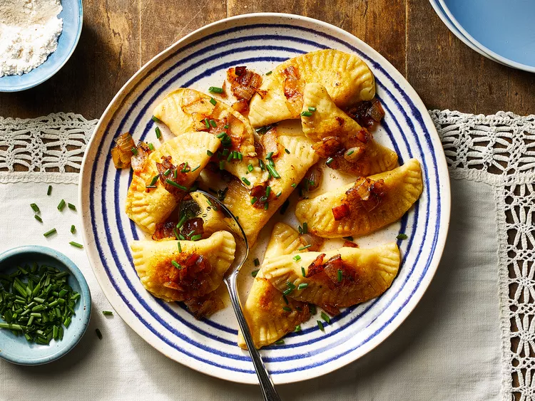

Home
Recipe for best Pierogies

Description
My great-grandmother's recipe. A little bit of work, but well worth it. We
make about 200 every Christmas Eve, and everyone can't wait. The amounts
for the ingredients is an estimate, because my great-grandmother does not
measure! Serve with a side of sour cream.
Ingredients
- 1 (16 ounce) container sour cream
- 3 cups all-purpose flour
- 2 cups cold mashed potatoes
- ½ cup butter
- 2 large onions, chopped
Steps
-
Make Dough: Mix sour cream and flour into a dough. Roll it out 1/16
inch thick and cut into 3.5-inch rounds.
-
Fill & Seal: Place 1 tsp of mashed potatoes on each round. Fold into a
half-moon and seal the edges with a fork. Cover with a towel.
-
Sauté Onions: Cook onions in butter until translucent; set onions
aside but keep the butter in the skillet.
-
Boil: Drop pierogies in boiling water. Once they float, boil for 4
minutes.
-
Sear & Serve: Pan-fry the boiled pierogies in the onion butter for 3
minutes until browned. Top with the cooked onions and keep warm in a
low oven.